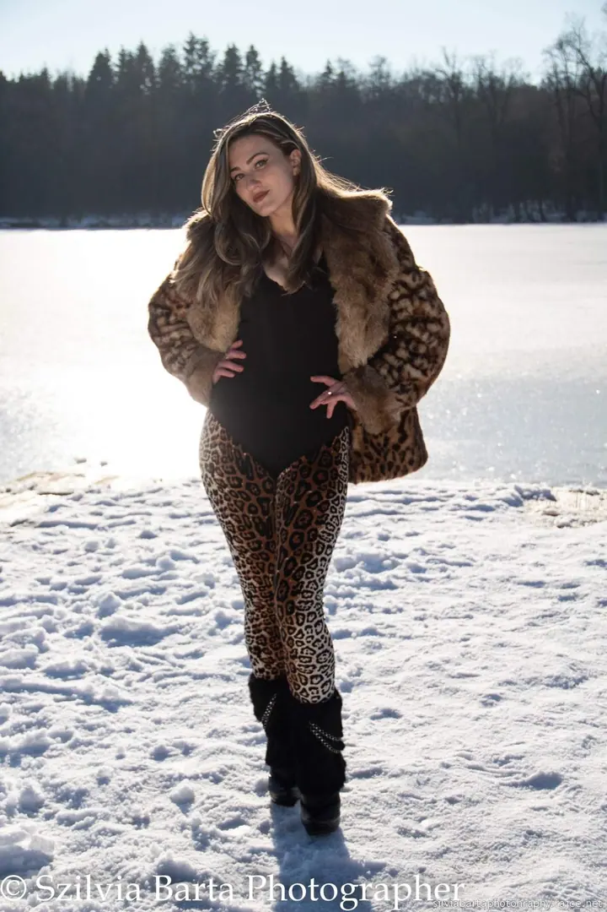
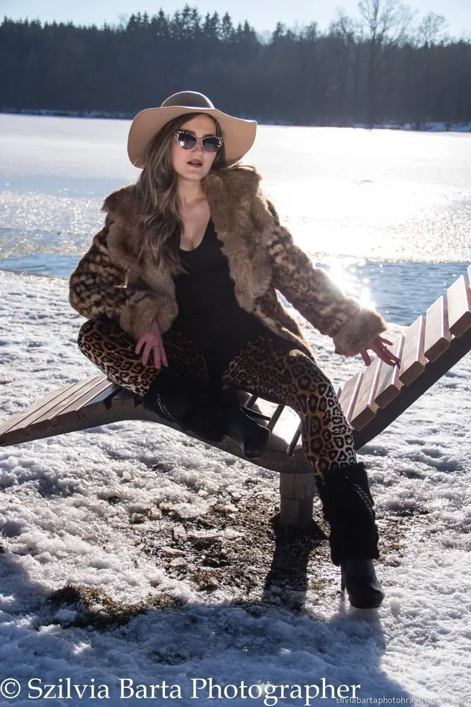
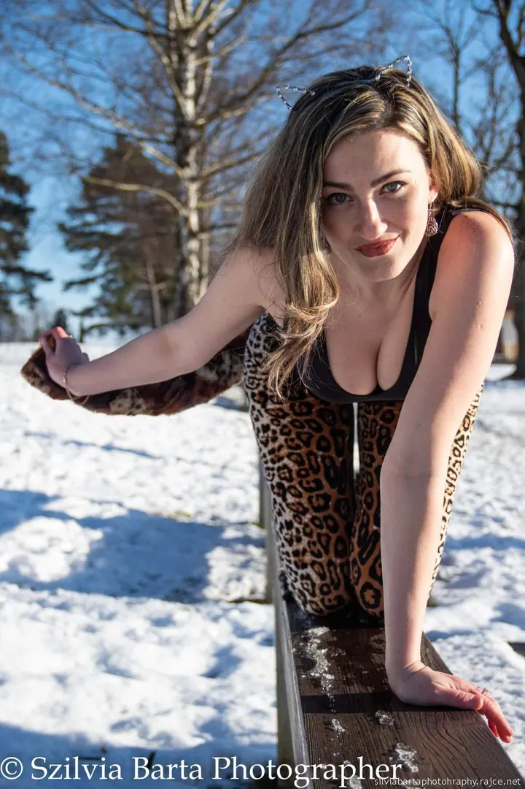
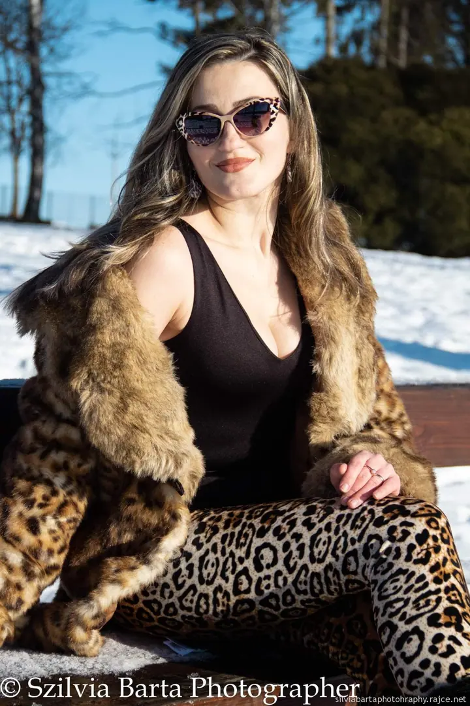
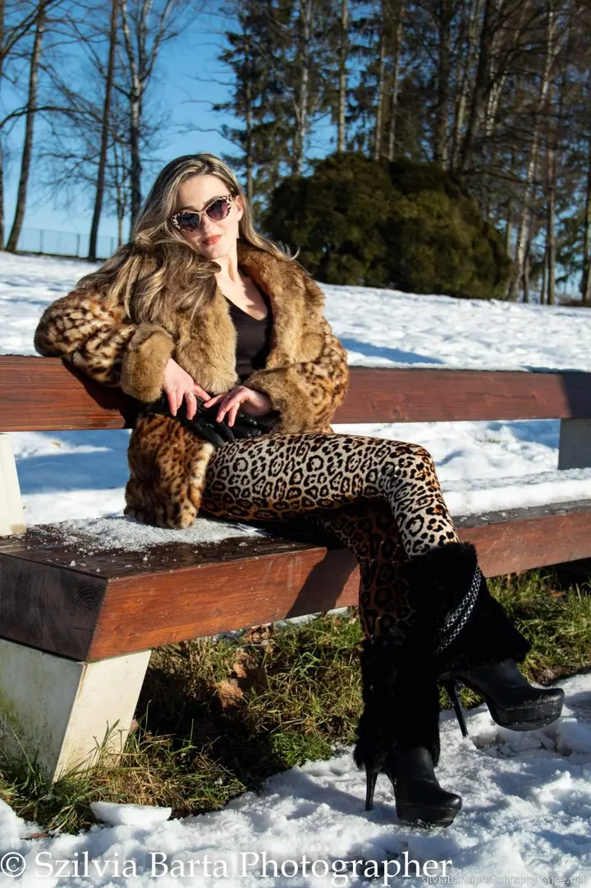
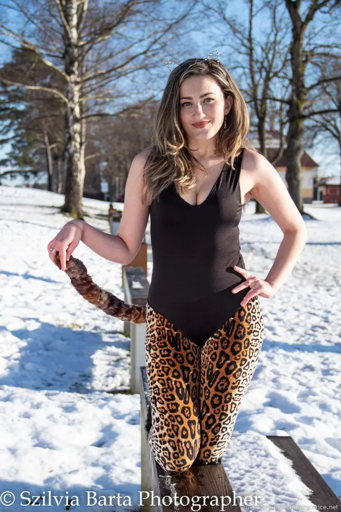
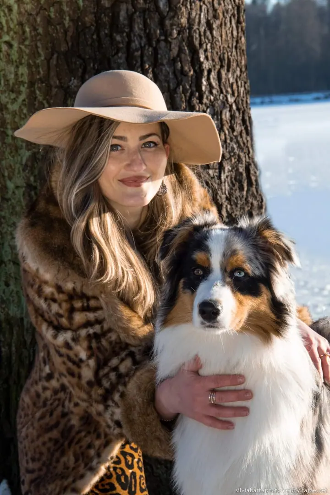
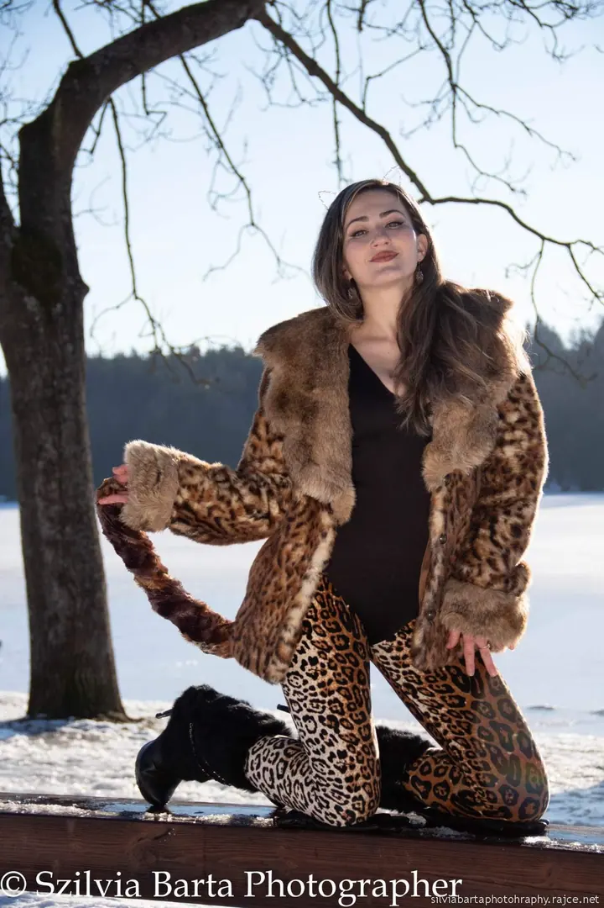

01 / 02
Stylizované portréty
Portréty venku s promyšleným stylingem a doplňky. Fotíme v přirozeném světle, klidně i ve sněhu u zamrzlého jezera.
Zeptat se na termín→







Závodní tahače i portréty se stylem
Zeptat se na termín →(01) Ahoj
Jmenuji se Szilvia Barta a fotím pro magazíny Český trucker a World Truck Racing Promotion . Kromě závodů tahačů fotím i stylizované portréty venku , třeba na zasněženém břehu jezera.
(02) Co fotím
01 / 02
Portréty venku s promyšleným stylingem a doplňky. Fotíme v přirozeném světle, klidně i ve sněhu u zamrzlého jezera.
Zeptat se na termín→Dále nabízím
Fotím pro magazíny Český trucker a World Truck Racing Promotion. Ráda nafotím i vaši sportovní nebo motoristickou akci.
↗(04) Postup
Od první zprávy po hotovou galerii.
Krok 1 z 4
Napíšete mi nebo zavoláte, o jakou akci nebo jaké focení jde. Domluvíme termín, místo a rozsah.
Krok 2 z 4
U portrétů spolu promyslíme styling, doplňky a lokaci. U akcí si projdu program, abych byla na správném místě ve správnou chvíli.
Krok 3 z 4
Na akci fotím průběh i atmosféru kolem. Při portrétu vás povedu pózami, ať se před objektivem cítíte přirozeně.
Krok 4 z 4
Vyberu nejlepší snímky, pečlivě je upravím a pošlu vám je v plném rozlišení.
Rychlost na okruhu, klid před objektivem.
(05) Za objektivem
Jmenuji se Szilvia Barta a velkou část svého času trávím u závodních tratí. Fotím pro magazíny Český trucker a World Truck Racing Promotion, takže dobře vím, jak rychle se na okruhu dějí věci, které stojí za zachycení.
Mimo závody se ráda zastavím a věnuji se portrétům. Stylizované focení venku mě baví právě tím, že na něj máme dost času: vybereme místo, oblečení, doplňky a pak už jen hledáme světlo a pózy, ve kterých se budete cítit dobře.
Své fotky průběžně sdílím ve galerii na Rajčeti, kde si můžete prohlédnout víc z mé práce. Pokud vás zaujala, napište mi nebo zavolejte a domluvíme se.
Szilvia
Szilvia Barta · Fotografka motorsportu a portrétů
Ne. Pro magazíny fotím hlavně truck racing, ale ráda nafotím i jinou sportovní nebo motoristickou akci. Napište mi, o co jde.
Nejraději venku v přirozeném světle. Lokalitu vybereme společně podle toho, jakou atmosféru chcete mít.
Určitě. Mazlíček na portrétu dodá fotkám osobní nádech, jen mi o něm dejte vědět dopředu.
Nejrychleji na telefonu +420 776 135 694 nebo e-mailem na silviebarta@seznam.cz.
(07) Kontakt
Napište pár vět o tom, co si představujete, a termín, který se vám hodí.
silviebarta@seznam.cz